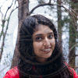

Javeria Afzal

Home
I believe that life is a racetrack where you strain to outrun yourself. You shouldn’t look
up to or down at anyone else as a measure of your success. I am a girl in a society of
suppressed females who has been blessed with opportunity .I am only what my
triumphs and failures have led me to be.
I initially wanted to do Biomedical Engineering but this degree wasn’t recognized in
Pakistan. Life closed and opened new doors for me and Alhamdulillah now I am at the
School of Electrical Engineering and Computer Science (SEECS), NUST, in my second
year of study with a major in Software engineering.
I am a highly motivated second year student looking for real corporate experience to
expand the horizon of my capabilities.
Along with studies, I do firmly believe that extra curricula’s are of immense
importance. Joining different societies is one way to allow for this. I hold an Executive
post in the SEECS Literary Society and also the post of Assistant Director of Media and
Creativity at the NUST Community Service “Edvolution” Chapter
Navigation